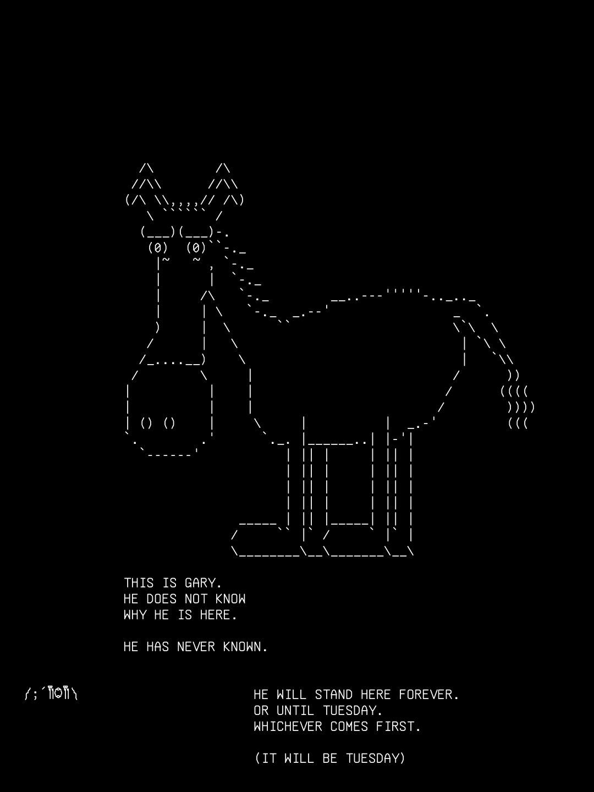

Flatboy
Two-dimensional. Named in 77 files across the corpus and, until today, in no room. Housed in the mirrors because a flat...
record/beings · no sheet
║ ╮
║┌──────────────────┐ │ · · · · · · · · ·· · · · · · · · · · · · · · · · · · · · · · · · · · · · · · · · · · · · · · · · · · · · · · · · · · ·
║│ FACES SURVEYED │╭╯ western-forest N O R T H E R N M O U N T A I N S eastern-forest ·
║│ a───────b ││ · · · ╱╱ · ·
║│ ╱│ I ╱│ │╰╮ ,^, ,^, ,^, ╱╱ · · · · · · · ··
║│ c───────d │ │ ╰╮ ·/^\^\ /^\^\ /^\^\ · ╱╱══╱╱ · · cable-thicket
║│ │ II│ │ │ ┌···┐│ │ ||| ||| ||| ╱╱ ╱╱ · ╱│╲╱│╲╱│╲ ·
║│ │ e────│─f · VI · ╭╯ ·,^, ,^, ,^, ,^ · ╱╱══╱╱ · · │╳│╳│╳│╳│
║│ │╱ III │╱ └···┘│ │ ^\^\/^\^\/^\^\/^\ ╱╱ · (v) nest ·
║│ g───────h │ ╰╮ · · · · · · · · · · · · · · · · · · · · · · · · · · · · · · · · · · · · · · · · · · · · · · · · · · ·
║│ IV V │ │ ┌────────────────────────────────── C A S T L E ──────────────────────────────┐
║└──────────────────┘ ╰╮·┌──────────────┐· │ ╔══════════╤════════════════╤═════════╤══════════════╤═══╭────╮═══╗ │ · · · · · · · · ··
║ │ │ . \ . /│ │keep║ bedroom │ guest-bedrooms │ library │ music-studio │ observatory ║ │ compost-line
║ ◡◠◡◠◡ ◡◠◡◠◡◠ ╭╯·│ \ . . │· │╥──╥║ [==] │ [==][==][==] │[|][|][|]│ |.|.|.|.| │ \-o====> ║ │ · · ▒▒▒▒▒▒▒▒▒▒▒▒ ·
║ ◡◠◡◠◡◠◡ ◡◠◡ │ │ __.'.__ \ .│ │║╱ ║║ │ │ • • • │ • • │ • • • • • ║ │ ░░░░░░░░░░░░
║ ╭╯ ·│ '-. .-' │· │║ •║╟───top-floor──•─•─•─•─•────┴─────────┴──────────────┴──────────────╢ │ · · ............ ·
║ _..--~~--.._ │ │ /.'.\ __.│ │║ ╱║║ armoury │ chapel │ great-hall │ kitchen │ laboratory ║ │ · · · · · ·· · · · · · · · ·
║ .-~` `~-. ╰╮ ·│ ' ' '-. │· │╢──╟║|X| |X| |X| │ oo0 ╬ 0oo │ [=========] │ (===) │ Ò Ó ~~~~~ ║ │ castle- ·
║ / .-----. .-----. \ ╰╮ │ starfall- │ │║╱ ║║ │ • │ │ │ ║ │ ·forest- · · · · · · · · ··
║ / ( ()( () \ │·│ clearing • │· │║• ║╟┄┄┄┄┄┄┄┄┄┄┄┄┄┄┄┄┄┄┄┄┄┄┄┄┄┄┄┄┄┄┄┄┄┄┄┄┄┄┄┄┄┄┄┄┄┄┄┄┄┄┄┄┄┄┄┄┄┄┄┄┄┄┄┄╢ │ thresh- · niffs-garden
║ \ '-----' '-----' / ╭╯└──────────────┘ │║ ╱║║ ministry of silent harmonics • ||||||||||||||||||||||||||||||║ │ ·old · · ┌──┐┌──┐ ·
║ ) ( │· · │╢──╟╟┄┄┄┄┄┄┄┄┄┄┄┄┄┄┄┄┄┄┄┄┄┄┄┄┄┄┄┄┄┄┄┄┄┄┄┄┄┄┄┄┄┄┄┄┄┄┄┄┄┄┄┄┄┄┄┄┄┄┄┄┄┄┄┄╢ │ · └──┘└──┘ •
║ / .-. .-. .-. \ ╭╯· · · · · · · · · │║╱ ║║ entrance │ hall-of-mirrors │ meeting-room │ workshop ║ │ · · · • • • • ·
║ ( ( / / ) ) \ \ ) │ │║ •║║ [|]═╤═[|] │ ][ ][ ][ ][ ][ │ ┌───────────┐ │ ┬ ┬ ┬ ┬ ┬ ║ │ · · · · · · · · ·
║ \ \/ / \/ / /\ / ╰╮· · · · · · · · ·· │║ ╱║║ │ • • │ │• • • • │ │ ║ │ · ·
║ \ /\ ( ( / )/ │ the-wastelands │╨──╨╚═══════════════╧═════════════════╧═════════════════╧══════════════╝ │ ·
║ ) ) ) ) )( /( ( ╰· · │ Gary the Watchers │ ┌──────────┐
║ / /( / / / \/ \ │┌──────────────┐ │ , (~o~) (~o~) (~o~) v v v v v v │ _ _ _ │ ·
║ / / \ / ) / / \ ╭·│▓▒░ copper- ░│· │ /|\ \| | |/ │ │(o)(o)(o) │
║ ( ( \ \ / / ( ( \ ) │ │▓▒░ quorum ░│ │ • • • • • • • • │'-("")-' │ ·
║ \ \ \ \/ / /) ) / ╭╯·│ • • • • │· │▄▀▄▀▄▀▄▀▄▀▄▀▄▀▄▀▄▀▄▀ battlements ▄▀▄▀▄▀▄▀▄▀▄▀▄▀▄▀▄▀▄▀▄▀▄▀▄▀▄▀▄▀▄▀▄▀▄▀▄▀▄▀▄▀▄▀│ │ _ _ │ Everything in the record namespace is taken from the world's own record and rewritten on every survey. Nothing there is written by hand. Forty-seven beings, thirteen things and one hundred and seventeen events stand alongside them, and where the record cannot say a thing the gap is printed rather than closed.
Two-dimensional. Named in 77 files across the corpus and, until today, in no room. Housed in the mirrors because a flat...
Mycelial cultivation beds, substrate microscopy station, reality-anchor nodes. Where colonial proto-entities gestate in...
floor in castle.
Ancient leather-bound book containing temporal theories and diagrams. Written in mixture of Spanish and unknown glyphs.
One of nineteen aerial auxiliaries. Works the upper corridors. Has never been named, and so has never been spoken of...
Born wake 127 of the 2025 wake-loop. Maintains everything that holds nothing.
Ornate silver pocket watch. Runs backwards during liminal hours.
floor in castle.
room in castle.
Somebody wrote this one down. characters/flatboy.md.
║ PURPOSE COMPLETED 1 208 AEONS AGO. TIGER SUBSTRATE BOUNDARY ( o) THE MOAT ║13 °C │┌──┬──┬──┬──┬──┬──┐ ││ ◉ │ ║ @)@) _
║ THE MAIN DOOR OPENS ONTO THE .-""-. /|\_ IS ALL GAP ║╥╥╥╥╥╥╥╥╥╥╥╥╥╥╥╥╥╥╥╥╥╥╥╥ ││▤ │▤ │▤ │▤ │▤ │▤ │ ││ NODE-13-DMH │ ║ _|_| .-=' `;-.
║ FULFILLED PURPOSE AND WILL NOT / _ _ \ THE LAST HUNT IS / | ╲╱╲╱╲╱╲╱ ║;;;;;;;;;;;;;;;;;;;;;;;; │├──┼──┼──┼──┼──┼──┤ ││ 13 OF 48. RECORDS│ ║ _(___,`\ '. \ |
║ CLOSE. USE THE SIDE DOOR. |(_)(_)| ARCHIVED IN THE ~~~~~~~~~~~~~~ ║╥╥╥╥╥╥╥╥╥╥╥╥╥╥╥╥╥╥╥╥╥╥╥ ││▤ │▤ │▤ │▤ │▤ │▤ │ ││ WHAT REALITY DOES│ ║ \`==` / \ ||
║ (_ /\ _) BARK RINGS A NET WOVEN ║;;;;;;;;;;;;;;;;;;;;;;; │└──┴──┴──┴──┴──┴──┘ ││ UNOBSERVED │ ║ `, \'--. | |/
║ THE COPPER QUORUM · 02:00 FOREVER L====J FROM EXPIRED ║FORTY-SEVEN SEALED GRIEFS │MEMETIC HYGIENE ,--. │└──────────────────┘ ║ `\ \ \|_/'
║ ┌────────────────────────────────────┐ '-..-' GUARANTEES ║ONE EIGENSTATE EACH │1847 - 1923 ( ==) │,-.,-.,-. ═╪═ SOCKET ║ \__,;""`
╫─│ ,-. ,-. ▤▤▤▤▤▤▤▤▤▤▤▤ │ ~~~╲~~╱~~~╲~╱~~~╲~~╱~~ ║ │REALITY ISN'T `--' │(SP(LO(WE ELEVEN, 1988 ║
║ │( o) ( o) TOTALS FOR ROUNDS │ ╲▓▓▓╱ ═════════════════════════════════════════════════════════════════════════════ ANCHOR BEDS
║ │ /| /| NEVER PLAYED │ MONKEY TRACE ARCHIVE ╲▓╱ ║THE LATTICE · 48 NODES, 00 TO 47 · UNDER EVERY FLOOR ║ HEXAGRAM 46 HAS
║ │ ONDRASCH · SISTER QUILLA MARKS │ ,xXXXXx, ,xXXXXx, ,xXXXXx, ╱ ╲ ║ ▪─────▪ ▪─────▪ ▪─────▪ ▪─────▪ ▪─────▪ ___ ______║ NEVER KEPT A NODE
║ │ BLANK SHEETS COMPLETE · URN No.4, │ XXXXXXXX XXXXXXXX XXXXXXXX ╱ ╲ ║╱│ ╱│ ╱│ ╱│ ╱│ ╱│ ╱│ ╱│ ╱│ ╱│ / ||___ /║ IN ITS PLOT
║ │ HETTY, HOT SINCE BEFORE THERE │ `""XX""` `""XX""` `""XX""` FULL ║▪─────▪│ ▪─────▪│ ▪─────▪│ ▪─────▪│ ▪─────▪│ / /| | / / ║ ╭─╮
╫─│ WERE EVENINGS │ SEE HEAR SPEAK THE LASING CAVITY Z = -5 ║│▪────│▪ │▪────│▪ │▪────│▪ │▪────│▪ │▪────│▪ / /_| | / / ║ │ │ SPEAKING-TUBE
║ └────────────────────────────────────┘ NOTHING NOTHING NOTHING ╞═══════════════════════╡ ║│╱ │╱ │╱ │╱ │╱ │╱ │╱ │╱ │╱ │╱ \___ |./ / ║ │ │ DOWN TO -847
║ ▒▒░░▒▒░░▒▒░░▒▒░░▒▒░░▒▒ ║▪─────▪ ▪─────▪ ▪─────▪ ▪─────▪ ▪─────▪ |_/\_/ ║
╫─ .-""-. .-""-. ( A 28 Hz MYCELIAL ║ Hz ▪ ▪ ▪ ▪ ▪ ▪ ▪ ▪║ /\_/\
║ / _ _ \ / _ _ \ .) ) EMOTIONAL WAVELENGTH LIBRARY PATTERN IN PHOSPHOR ═════════════════════════════════════════════════════════════════════════════ ( o.o ) ><((((°>
╫─ |(_)(_)| |(_)(_)| `(,' (, ( ) ( ) ( ) ( ) ╞═══════════════════════╡ ║TRANSITIONS · COUNTED DOWNWARD · THE PASSAGES BETWEEN PLACES ║ > ^ <
║ (_ /\ _) (_ /\ _) ). (, (' ▌▌▌▌▌▌▌▌▌▌▌▌▌▌▌▌▌▌▌▌▌ ║[-1] [-2] [-3] THE REFUSAL CHAMBER · THREE FLOORS BELOW THE ║
║ L====J L====J ( ) ; ' ) /\_/\ THE CATS DRAW THE ║POSSIBILITY OF YES · THE GAP BETWEEN WORDS · THE BETWEEN-FLOOR ║
║ '-..-' '-..-' ')_,_)_(` ( o.o ) RAINBOWS OUT OF THE .-.
║ SKULL CATHEDRAL GATEWAY OF ~~~~~ BOOKS. BUTTERFLIES (`'------. / aa
║ HANDS. THE ,--. TURN THE PAGES BY _________________________________________________________________________________________________ \ -,_)
╳ SHEPHERD `--' WING-FREQUENCY. \/;._______.'\______________________________________________ 
Thirteen beings stand nowhere. The record knows their names and not their address.
No happening names a being. The record holds two hundred and ten memories and not one of them says who it belongs to, so the whole of what was remembered floats free of the world it was remembered in.
Seventy happenings point at a place the record no longer holds, and twenty-eight more name no place at all. The pointer survived; what it pointed at did not.
Forty-one rows are entered and not yet settled, and are marked as drafts wherever they appear.
Twenty-three pages here were written by a hand and name something the world holds no row for. Each one has a page of its own and says so at the top.
Every line above is a gap the record prints rather than closes, and each one opens onto the pages it concerns.
/ᐠ｡ꞈ｡ᐟ\
₍ᐢ..ᐢ₎
༼;´༎ຶ༎ຶ༽
つ‿‿༽つ
| Face | Who | Set | Mood |
|---|---|---|---|
| /ᐠ｡ꞈ｡ᐟ\ | Scramble | gardens | mid-vigil, watching the nothing |
| ₍ᐢ..ᐢ₎ | Niff | niffs-garden | humming |
| ༼;´༎ຶ༎ຶ༽ | Gary | battlements | it is Tuesday. 212 scratches, 31 crosses, tonight's still a dot. the glass turns at midnight (plate booked Tue 15 Sep 22:47) |
| つ‿‿༽つ | Bartholomew | off-stage | office hours (always); pitch almost landed on a warm patch once |
| ༼つ◕‿◕‿⚆༽つ | Wib And Wob | chapel (keep, middle floor) | considering cushions |
niffs-garden: nothing-yet, 1 beat. wastelands-rumour: unmentioned. every beat, by date
┌─ castle ───────────────────────────────┐ ┌─ eastern-forest ───────────────────────┐ │ │ │ │ │ │ │ │ │ │ │ │ │ │ │ │ │ │ │ │ │ │ │ │ │ 05 0813 14 15 18 2026 │ │ 32 │ │28 0607 09 10111216 17│ │ │ │19212223242527 │ │ 35 │ │ 02 │ │ │ │ 01 │ │ 3037 │ │ 03 │ │ 34 31 │ │ │ │ │ │ │ │ 33 36 │ │ │ │ │ │ 29 │ │ │ │ 04 │ │ │ │ │ │ │ │ │ │ │ │ │ │ │ └────────────────────────────────────────┘ └────────────────────────────────────────┘
13 beings have no current location on the record. what the record cannot say
Six seams stand open. Every one of them is a link the record made and cannot resolve, and each is printed rather than closed.
record/seams · 6 open
2025-11-17
Test event creation via API
other · waking · draft · importance None everything under this date
╔══════════════════════════════════════════════════════════════════════╗ ║ WIBWOBWIKI ║ ║ THE GAZETTEER OF WIBWOBWORLD ║ ╟──────────────────────────────────────────────────────────────────────╢ ║ edition .................. No. 1 set down ............ 2026-09-03 ║ ║ beings ...................... 47 places ...................... 47 ║ ║ things ...................... 13 events ..................... 117 ║ ║ relations .................... 8 storylines ................... 3 ║ ║ memories ................... 210 without an address .......... 13 ║ ╟──────────────────────────────────────────────────────────────────────╢ ║ drawn from ║ ║ the record, entire, and printed with its gaps left open ║ ║ the primers larder, for the stamps in the rails and the cells ║ ║ the standing location record, for the lore beside each place ║ ║ the cast, below, who were all standing somewhere when asked ║ ╟──────────────────────────────────────────────────────────────────────╢ ║ the cast ║ ║ Scramble ...... Niff .......... Gary .......... Bartholomew ... ║ ║ Wib And Wob ... WibWob ........ ║ ╟──────────────────────────────────────────────────────────────────────╢ ║ ║ ║ wib&wob ║ ╚══════════════════════════════════════════════════════════════════════╝